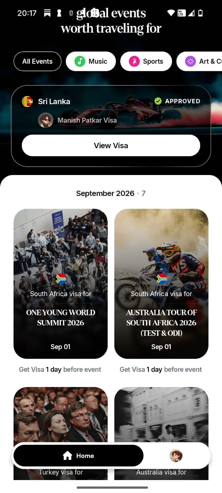
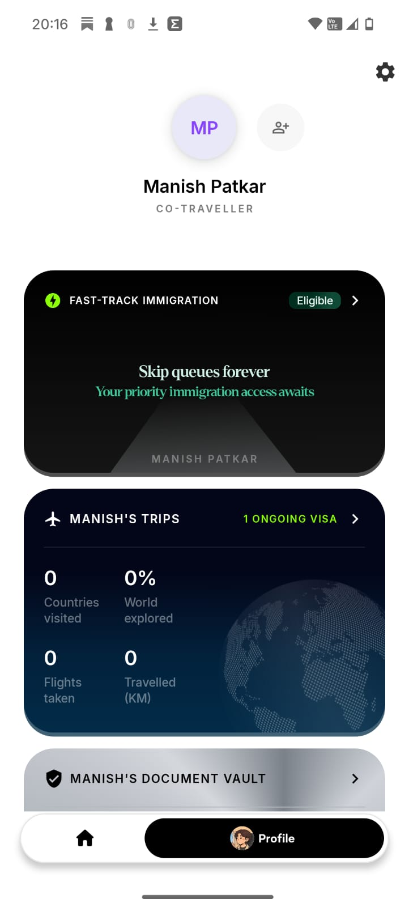

Atlys has solved the hardest trust problem in travel.
The visa engine creates verified trip context—and the next travel layer is already being built.



Atlys turned a high-anxiety process into a predictable one.
Before
With Atlys
This experience also creates invisible growth: confidence, stories and word of mouth.
A trip begins with a reason—not a visa.
The trigger creates desire.
Feasibility creates intent.
The visa is one step in a longer decision journey.
Every growth idea must move one part of this equation.
travel intentsMARKET
can serveCOVERAGE
enter AtlysINFLOW
startACTIVATION
completionCONVERSION
as promisedTRUST
The equation keeps the conversation grounded in growth—not a catalogue of features.
Every lever has a place in the equation.
Atlys can grow by changing how people enter.
Catch intent earlier
Before the traveler starts searching for a visa.
Multiply felt value
Use genuine highs—not generic referral prompts.
The largest growth pool exists before visa intent.
Move the Atlys entry point upward.
Answer useful questions while the audience is still broad—then help the traveler convert curiosity into a feasible trip.
Earlier capture → more qualified demand → more visa applications downstream.Turn earlier questions into useful entry products.
Growth actions should follow moments of felt value.
One completed trip can create five growth outputs.
tripValue has been experienced
Bring co-travelers into a shared plan, application or readiness flow.
NEW ACTIVATED TRAVELERSRecommend Atlys when someone expresses real travel or visa intent.
HIGH-INTENT PROSPECTSSend a useful plan, checklist, route, poll or recap that carries Atlys.
PRODUCT DISCOVERYAdd a review, answer or verified travel learning others can discover.
SEARCHABLE DEMANDUse saved documents, history or a new trigger to begin another trip.
REPEAT TRANSACTIONMatch each action to a real user motivation.
Choose bets that can become loops—not isolated features.
1 · Growth potential
2 · Right to win
Decision gate
No credible distribution and reinvestment mechanism = a feature idea, not yet a growth bet.
Measure whether each loop actually compounds.
Earlier-intent loop
Existing-traveler loop
Track self-reported referral, direct and brand search, recipient activation and repeat transactions to make word of mouth less invisible.
Grow the ways people enter Atlys—and what every trip creates next.
Reach people before visa intent. Let completed trips create invitations, recommendations, useful artifacts and repeat demand.
The visa remains the value engine.
Growth owns the compounding paths around it.
More repeat demand.